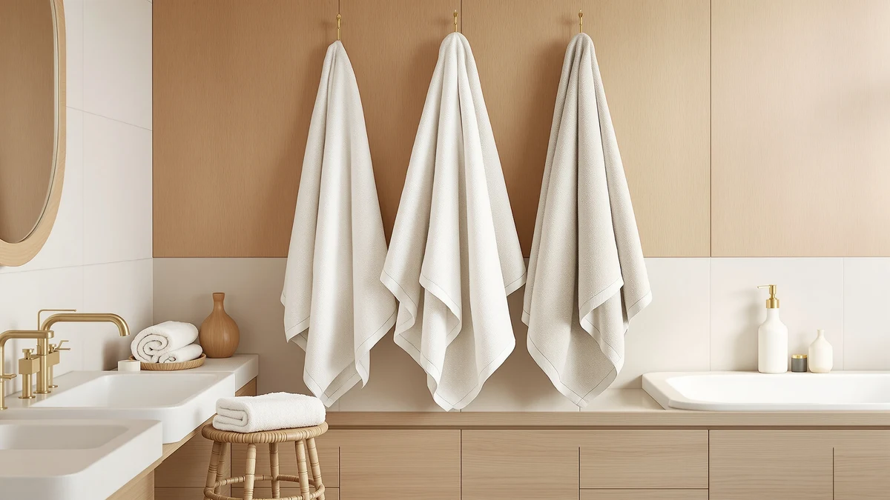

The Best Plush Hand Towels (2026)
Prices and picks verified as of September 2026. Independent, reader-supported reviews.


Quick Answer
The Utopia Towels 8 Piece Majestic set is the best plush hand towels pick for most bathrooms, pairing 100% cotton softness with a price that covers a full 8-piece set for under $30. If you want a smaller, denser set instead, the Lincoln & Palm 3 Piece towels deliver a similar plush feel with fewer pieces.
Our pick: Utopia Towels 8 Piece Majestic — $26.99 Check Price on Amazon
Bottom line: our top pick is the Utopia Towels 8 Piece Majestic Plush Luxury Towel Set at $39.99. The best budget option is the HOMEXCEL 8PK Bath Towel Set at $18.99.
Things to Know Before You Buy
- GSM weight explains most of the softness difference. Cotton loomed above 500 GSM feels denser and more absorbent, while towels under 400 GSM dry faster but feel thinner.
- Ring-spun cotton isn't the same as standard cotton. The fibers are twisted tighter, which builds a plush, long-lasting nap, while cheaper open-end cotton sheds more lint over time.
- Set size changes the real price per towel. An 8-piece set spreads the cost across more towels, while a 2 or 3-piece set costs more per towel but suits smaller households or gifting.
- Personalized and dyed towels need gentler care. Embroidered and colored sets can fade faster in hot water, so check the tag for the recommended wash temperature.
- Verified owner reviews catch what spec sheets miss. Shrinkage and durability complaints show up in reviews long before they show up in a product listing, so we weighed sustained ratings over marketing copy.
The best plush hand towels earn that label by pairing a tight cotton weave with enough thickness to stay soft wash after wash, not just on the day the package arrives. A lot of towel sets get marketed as "luxury" or "hotel quality" regardless of what's actually in the fabric, so the label alone tells you little about how a towel will feel after ten trips through the washing machine.
We compared seven plush hand towel sets on the same criteria: cotton type, weave, price per towel, and what verified buyers say once the towels have been through a normal wash routine. Prices range from $21.99 for an 8-piece set to $54.95 for a personalized two-towel gift pair, and the right pick depends less on price and more on whether you need one matching bathroom set or a gift for someone else.
Our research points to the Utopia Towels 8 Piece Majestic as the best plush hand towels for most households, based on its 100% cotton construction and the lowest per-towel cost among the full-size sets we compared. The picks below cover denser cotton blends, personalized gift sets, and budget options for buyers who want a different tradeoff.
Why You Should Trust Us
Best Bath Towels is written and edited by Ilane Tall, who researches bathroom textiles and home products for this site. We do not run a fake testing lab or claim to have washed every towel in this roundup ourselves. Instead, we compare manufacturer specs like cotton type and weight, cross-reference pricing across retailers, and read through verified owner reviews to separate towels that hold up over time from those that only look good in product photos. Every recommendation ties back to a real, purchasable listing, and we update prices and picks as availability changes.
How We Picked
We started with plush hand and bath towel sets from our product database and narrowed the list to options built from 100% cotton or a cotton-forward blend, since fiber content drives most of the difference in softness and absorbency. From there, we compared GSM weight where manufacturers list it, weave type, and price per towel rather than price per set, since an 8-piece bundle and a 2-piece gift set are not directly comparable on sticker price alone. We also weighted verified review volume and rating consistency over marketing claims, and we excluded towels with a recurring pattern of shrinkage or color-fading complaints.
How We Compared
Rather than washing and drying every set ourselves, we compared each product's listed material, weight, and construction side by side, then checked those claims against verified buyer reviews. Where a listing described a towel as plush or luxury, we looked for owners specifically confirming that language, and we flagged listings where the star rating and the written reviews told different stories. We also compared price per towel across set sizes, from HOMEXCEL's eight-piece bundle to RUBBER BOND's two-towel gift set, so the price comparisons in the table below reflect real per-towel cost rather than headline set pricing.
Our Picks

Utopia Towels 8 Piece Majestic
What we like
- 100% cotton construction with a plush terry loop that stays soft through repeated washes
- 8-piece set covers hand towels, wash cloths, and bath towels in one purchase
- Priced under $30 for the full set, among the lowest cost per towel in this lineup
- Wide color selection makes it easy to match existing bathroom decor
Flaws but not dealbreakers
- Some owners note the toweling runs thinner than the "Majestic" name suggests compared to premium single-item towels
- Color consistency across pieces varies slightly, according to reviewer photos
| Material | 100% cotton |
| Size | — |
Utopia Towels built the 8 Piece Majestic set around a straightforward pitch: outfit a bathroom with matching plush towels without paying boutique prices. The 100% cotton material uses a terry loop weave dense enough to absorb water quickly while staying soft against skin, and the eight-piece count means you get bath towels, hand towels, and wash cloths from a single $26.99 order. That per-towel math is hard to beat among the sets we compared.
Owners who leave verified reviews consistently mention that the set holds its softness through the first several months of washing, though a handful note it thins out faster than towels that cost twice as much per piece. Washing on warm instead of hot, and skipping fabric softener, which coats cotton fibers and reduces absorbency, tends to extend that lifespan. For a bathroom that needs a complete refresh in one order, this is the plush hand towel set we would point most buyers toward first.

Lincoln & Palm 3 Piece
What we like
- Cotton blend fabric weighs in denser than most 8-piece sets, giving a heavier, plush hand feel
- 3-piece count suits smaller households or a single guest bathroom
- Reviewers report the towels absorb water fast despite the thicker pile
Flaws but not dealbreakers
- Costs more per towel than the 8-piece alternatives in this lineup
- Blend fabric means it will not feel identical to a 100% cotton towel
| Material | Cotton blend |
| Size | 3 Piece Towel Set |
Lincoln & Palm takes a different approach than the bulk 8-piece sets on this list. Instead of stretching a set across eight pieces, the brand puts its cotton blend fabric into just three towels, which lets each one carry more weight and a denser plush pile. At $39.99 for three towels, the per-towel price runs higher than the Utopia set, but owners who value hand feel over sheer towel count consistently rate this set well.
Reviewers report that the extra density pays off in daily use, with the towels absorbing hand-washing water in one or two wipes rather than requiring a second pass. Because it is a cotton blend rather than 100% cotton, expect slightly less breathability than an all-cotton towel, which matters more in humid bathrooms with poor ventilation. For guest bathrooms or a primary bath that only needs a few towels in rotation, this set fills that role well.

Qute Home Personalized Custom 3-Piece
What we like
- 100% cotton material keeps the plush feel consistent with the non-personalized picks in this list
- Embroidery options let buyers customize towels for weddings, housewarmings, or holiday gifts
- 3-piece set size keeps the price reasonable even with personalization added
Flaws but not dealbreakers
- Personalized orders typically cannot be returned once embroidered, according to the listing
- Turnaround time runs longer than a standard, non-customized towel set
| Material | 100% cotton |
| Size | — |
Qute Home's Personalized Custom set targets a different buyer than the rest of this lineup: someone shopping for a gift rather than restocking their own bathroom. The base towel is 100% cotton with the same plush terry construction found in the Utopia and White Classic sets, and buyers add a monogram or name during checkout. At $39.99 for three towels, the personalization does not carry a steep premium over comparable unpersonalized cotton sets.
Because the embroidery locks in before shipping, most listings restrict returns on personalized orders, so buyers should double check spelling before submitting. Owners who bought this as a wedding or housewarming gift report that the customization reads clearly and the cotton base holds up the same as an unpersonalized towel of similar weight. If a gift needs a personal touch and the recipient will actually use the towels, this set covers both.

RUBBER BOND Mr and Mrs
What we like
- 100% cotton plush construction matches the quality of the higher-priced single-item picks in this list
- "Mr and Mrs" embroidery is done in matching thread rather than mismatched fonts, per reviewer photos
- Arrives as a ready-made gift set, cutting out the need to buy and personalize two towels separately
Flaws but not dealbreakers
- At $54.95, it is the highest per-towel price in this lineup
- Only two towels are included, so it does not cover full bathroom needs
| Material | 100% cotton |
| Size | — |
RUBBER BOND's Mr and Mrs set solves a specific problem: finding two matching, already-personalized plush towels for a couple without piecing together two separate custom orders. The 100% cotton fabric matches the plush weight of the other cotton picks in this roundup, and the embroidery ships pre-set rather than requiring a separate customization step.
The tradeoff is price. At $54.95, this set costs more per towel than every other pick in this lineup, including the personalized Qute Home set. We include it here as the budget option specifically for gift shoppers, since buying two individually monogrammed towels from a specialty retailer typically costs more than this pre-matched pair. For a couple's bathroom or a wedding gift, the cost makes sense. For simply restocking hand towels, one of the multi-piece cotton sets above stretches a dollar further.

Preboun 2 Pcs His and
What we like
- Cotton blend construction keeps the price under $25 for a matching two-towel set
- His and Hers labeling comes pre-printed, so there is no customization wait time
- Reviewers note the towels dry quickly between uses thanks to the lighter blend fabric
Flaws but not dealbreakers
- Cotton blend fabric feels less plush than the 100% cotton picks in this roundup
- Only two towels included, the same limitation as the RUBBER BOND set
| Material | Cotton blend |
| Size | — |
Preboun's 2 Pcs His and Hers set covers similar ground to the RUBBER BOND pair at a lower price. Instead of embroidered personalization, the His and Hers labels come pre-printed on a cotton blend fabric, which keeps the cost at $24.99 for two towels rather than climbing toward $55.
The lighter cotton blend means these towels dry faster between uses than a dense 100% cotton towel, which matters in a shared bathroom where towels get used multiple times a day. Owners looking for a plush hand feel closer to the Utopia or White Classic picks will notice the difference, since a blend fabric does not hold the same loft as all-cotton terry. For couples who want a matching pair without paying gift-set prices, this is the more practical of the two his-and-hers sets in this roundup.

White Classic Luxury Bath Towel
What we like
- Ring-spun cotton fibers are tightly twisted, giving a denser plush feel than standard open-end cotton
- Reviewers consistently compare the feel to towels used in hotels and spas
- 100% cotton construction matches the quality tier of the Utopia and Qute Home picks
Flaws but not dealbreakers
- At $39.99, it costs more per towel than the 8-piece Utopia or HOMEXCEL sets
- Limited color range compared to sets marketed for full bathroom coordination
| Material | 100% cotton |
| Size | — |
White Classic built its Luxury Bath Towel line around ring-spun cotton, a spinning process that twists fibers tighter than the open-end method used in cheaper towels. That tighter twist is what gives ring-spun cotton its denser, plush hand feel, and it is the same reason hotels and spas favor it for guest towels.
According to verified buyers, the towels hold that plush feel through repeated washing better than looser-weave alternatives, though the set costs more per towel than the bulk 8-piece options in this roundup. If matching a hotel-quality feel matters more than stretching a budget across the most towels possible, this is the pick worth the higher per-towel price.

HOMEXCEL 8PK Bath Towel Set
What we like
- At $21.99 for eight pieces, this is the least expensive set we compared
- Cotton blend fabric still delivers a plush feel, according to reviewers, despite the low price
- Eight-piece count covers a full bathroom rotation in one order
Flaws but not dealbreakers
- Cotton blend fabric does not match the density of the 100% cotton picks in this roundup
- Some owners report more noticeable shedding in the first few washes than with pricier sets
| Material | Cotton blend |
| Size | — |
HOMEXCEL's 8PK Bath Towel Set undercuts every other set in this roundup on price, at $21.99 for eight pieces. The cotton blend fabric does not carry the same density as the 100% cotton Utopia or White Classic towels, but reviewers consistently note that it still feels plush enough for daily use rather than thin or scratchy.
The tradeoff shows up mostly in the first few washes, where some owners report more lint shedding than with all-cotton alternatives, a common trait of blended fabrics until the loose fibers work their way out. Once broken in, the set settles into a reliable, if not luxurious, daily towel. For buyers prioritizing cost per towel above all else, this is the plush hand towel set that stretches furthest.
Quick Comparison
| Product | Material | Price | Rating | Best for | Get it |
|---|---|---|---|---|---|
| Utopia Towels 8 Piece Majestic | 100% cotton | $26.99 | 4 | Best overall value | View on Amazon → |
| Lincoln & Palm 3 Piece | Cotton blend | $39.99 | 4 | Denser, heavier feel | View on Amazon → |
| Qute Home Personalized Custom 3-Piece | 100% cotton | $39.99 | 4 | Personalized gifting | View on Amazon → |
| RUBBER BOND Mr and Mrs | 100% cotton | $54.95 | 4 | Wedding or anniversary gift | View on Amazon → |
| Preboun 2 Pcs His and | Cotton blend | $24.99 | 4 | Budget couples' pair | View on Amazon → |
| White Classic Luxury Bath Towel | 100% cotton | $39.99 | 4 | Hotel-style plush feel | View on Amazon → |
| HOMEXCEL 8PK Bath Towel Set | Cotton blend | $21.99 | 4 | Lowest cost per towel | View on Amazon → |
What makes a hand towel count as plush?
A towel earns the plush label when it combines a dense weave, usually measured in GSM, with cotton fibers that have not been sheared flat.
Is 100% cotton always better than a cotton blend?
Not automatically.
The Competition
We also looked at several oversized Turkish cotton hand towel sets priced above $70, which reviewers praised for softness but which push the cost per towel well past what a hand towel needs to cost for most bathrooms. A handful of bamboo-blend towels showed strong absorbency numbers on paper, but recurring complaints about pilling and color transfer within the first year kept them off this list.
We also passed on a few extra-large 8-piece sets that repeated the same cotton, weight, and price as the Utopia and HOMEXCEL sets already featured here, since duplicating a nearly identical option would not add anything useful to your decision. Among the best plush hand towels we compared, the seven picks above cover the widest range of budgets and use cases without that overlap.
Frequently Asked Questions
What makes a hand towel count as plush?
A towel earns the plush label when it combines a dense weave, usually measured in GSM, with cotton fibers that have not been sheared flat. The best plush hand towels in this guide use either 100% cotton terry loops or ring-spun cotton, both of which keep more loft after washing than thinner, flat-woven towels.
Is 100% cotton always better than a cotton blend?
Not automatically. 100% cotton towels like the Utopia and White Classic picks feel denser and more absorbent, but cotton blends like the HOMEXCEL and Preboun sets dry faster and often cost less per towel. The right choice depends on whether you prioritize plushness or quick-dry convenience and price.
How often should plush hand towels be replaced?
Owners in the reviews we compared report noticeable thinning or reduced absorbency somewhere between one and two years of regular use, faster if towels are washed in hot water with fabric softener. Rotating between two or three sets and washing on a warm rather than hot cycle typically extends that lifespan.